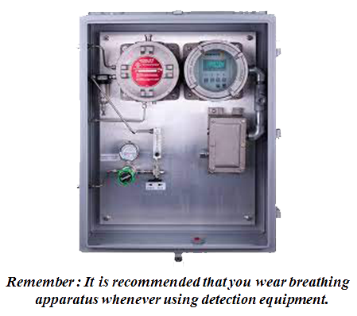

To detect the H2S gas we need to rely on detection equipment since the gas in invisible. Although the Odor is noticeable, without reliable equipment we still cannot measure the concentration of the gas.
There are three different types of monitors to detect H2S :
1. Personal Detector
2. Personal & Portable Continuous Monitor
3. Fixed Continuous Monitor
1. Personal Detector
There are two common types
Passive Devices : the ampoule
Physical features : The ampoule is a thin glass tube containing lead acetate solution enclosed in a fabric cover.
To use : Break the glass tube and soak the fabric with solution. Pin the ampoule to your clothing. It will gradually discolor in the presence of H2S.
Accuracy : Ampoules are slow to react, they do not indicate H2S concentration accurately, and are not readily available any longer. The use of ampoules is not recommended due to their inaccuracy. Newer, faster and more accurate detectors are more preferable.
The hand held detector tube is the most popular type of device because it is portable and it can measure both the presence and the concentration of gas. There are various tubes used to detect different gases in these devices. The two brands described below are the most commonly used.
GASTEC brand:
• Physical features: composed of a tube attached to a vacuum pump. The pump is a "piston" type which consists of several parts.
Function : Atmosphere sample is drawn through an H2S tube by mean of a Vacuum. The sample stains the chemical in the tube. Length of discoloration of the chemical in the tube indicates level of concentration.
To use : Read the manual carefully and follow the instructions for number of pump strokes. The number of strokes determines what concentration level the length of discoloration should be compared Allow the precise time as indicated in the detector tube instructions, after each stroke. Ensure the ends of the tube are broken and that it is inserted in the unit with the arrow pointed towards the pump inlet.
• Accuracy : Tubes are made for different ranges of H2S. Readings are indicated in PPM or Percentages. The condition of the equipment, remaining shelf life of the tube, and ambient temperature affect the accuracy of the reading obtained. The tube's accuracy is only within plus or minus 25 % as per National Institute or Safety and Health (NIOSH) standards.
2. Single & Portable Continuous Monitors

a. Features : It is battery operated some are rechargeable, others are not. It is composed of a sensor, an alarm, and possibly an earphone.
b. Function : The alarm goes off at specific concentrations according to a predetermined setting. In some models, the greater the concentration, the higher the alarm pitch. The unit may or may not the "actual" level of concentration.
c. To use : Check the battery level pnd check its calibration. Test the unit. Clip it to your belt. Switch it on. The earphone in optional.
Features : Battery or AC powered unit with a sensor, a meter, and an alarm.
Function: Alarm goes off when gas concentration reaches a value of the alarm setting (usually set at 10 PPM) and shows on a gauge continuously.
To use : Check the power level. Switch it on and test the unit. Ensure that it is calibrated. Some units may require "warm up" prior to use. Place it between yourself and any possible source of H2S.
3. Fixed Continuous Monitor
Fixed continuous monitors are used in short term projects such as drilling or servicing operations. The sensors are situated in the potential release area. Flexible leads are run to a remote station indicator gauge in the area away from the potential release.
a. Features : AC powered unit consisting of indicator gauge, alarm, and one or more sensors. It is a permanent device suitable for continuous operation in installations like gas plants and oil refineries.
b. Function : Any of these sensors will activate the alarm. The levels of concentration maybe be set at any level, but normally the units are set to respond to gas concentrations exceeding 10 PPM. In addition, the actual level of gas can be indicated on the gauge.
c. To use : The central unit is mounted on a wall in the control room. The sensors are located at strategic positions throughout the workplace. If necessary, a number of systems can be "grouped" together. To operate the unit you need to calibrate, test, and then switch on the power.